📖 设定集 · F2设定集
F2 图版 · 姐妹造型与服装（上）
F2 官方设定集图版 · p024–p045
5
本卷页数
🎨
设定集
中/英
双语
🖼️ F2 官方设定集 · 原书图版
F2 图版 · 姐妹造型与服装（上）
《The Art of Frozen II》（Jessica Julius, Chronicle Books 2019） p024–p045
19
图版
p024–p045
原书页码
原书
扫描原图
笔记
逐页图注
👭 F2 姐妹造型设计的前半段：Anna 的出场礼服、旅行装、背包与发饰，Elsa 的配色方案、旅行装各阶段与「Into the Unknown」之夜的睡裙——安娜的成熟度可以用她的衣服来追踪。
👗 Anna & Elsa 造型与服装（p024–p045）

Elsa 造型设计 + Marc Smith 访谈（p21）
Marc Smith：Frozen II 故事发生在第一部 3 年后，挑战是延续故事深入情感而不是重复；两人要处理童年未解决的问题。（F2设定集原页）
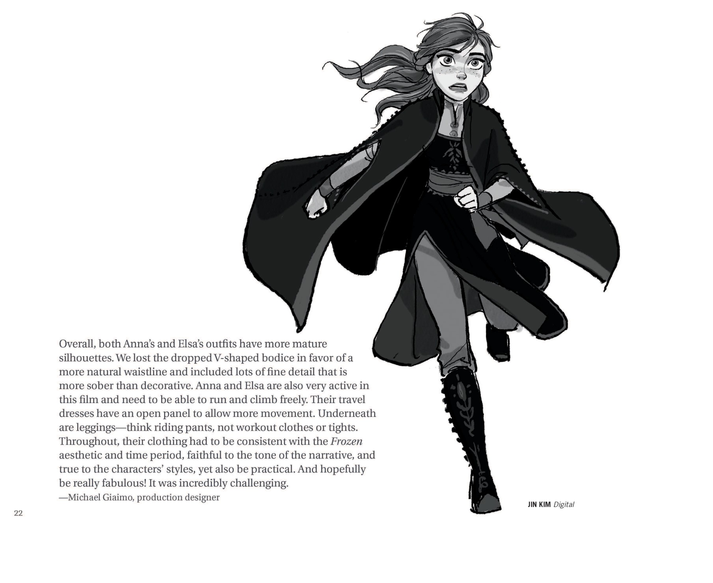
Anna 跑步造型 + Michael Giaimo 访谈（p22）
服装设计：1) 更成熟轮廓；2) 去掉 V 形低腰改用自然腰线；3) 细节偏朴素非装饰；4) 服装要适合跑跳；5) 旅行裙有开口便于运动；6) 裙下穿马裤（riding pants），不是健身裤或紧身裤；7) 保持 Frozen 美学和时代感。（F2设定集原页）
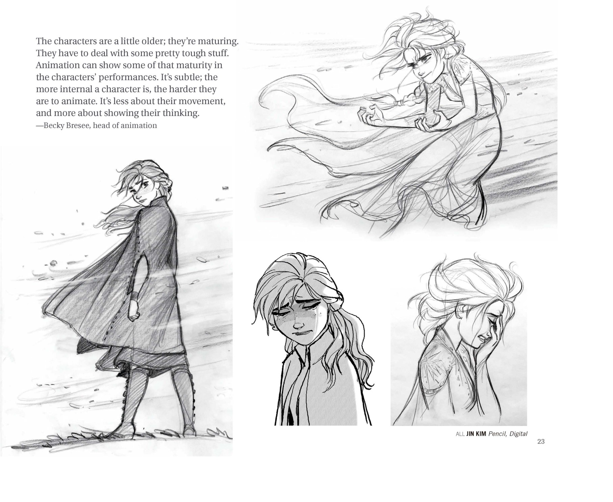
Anna/Elsa 表情与动作概念图（p23）
Becky Bresee：人物更成熟、面临艰难处境；动画表演需微妙展示内在；思考型角色比动作型更难动画。（F2设定集原页）
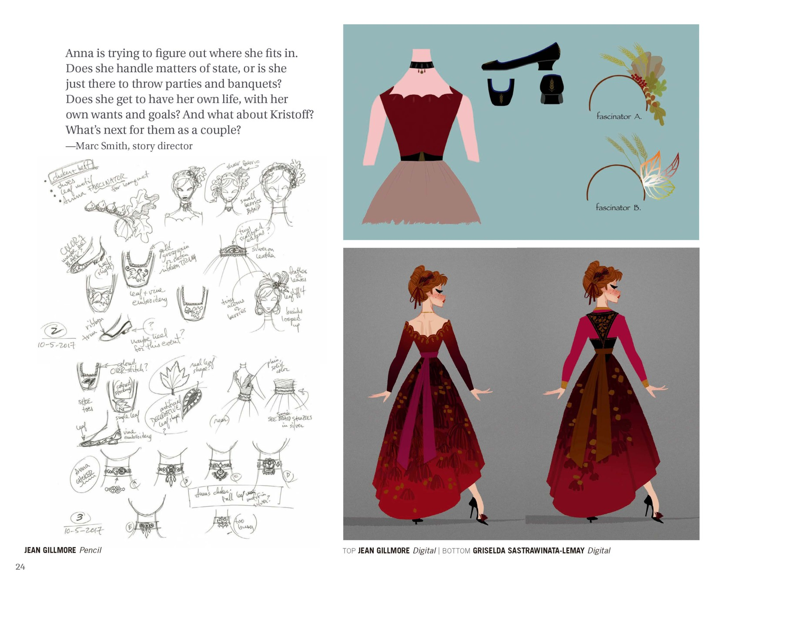
Anna 舞会礼服设计 + Marc Smith 访谈（p24）
Marc Smith 谈 Anna 的身份定位（是处理国务还是派对？个人生活？Kristoff 怎么办？）；Anna 舞会礼服设计迭代——深酒红配金叶纹饰。（F2设定集原页）
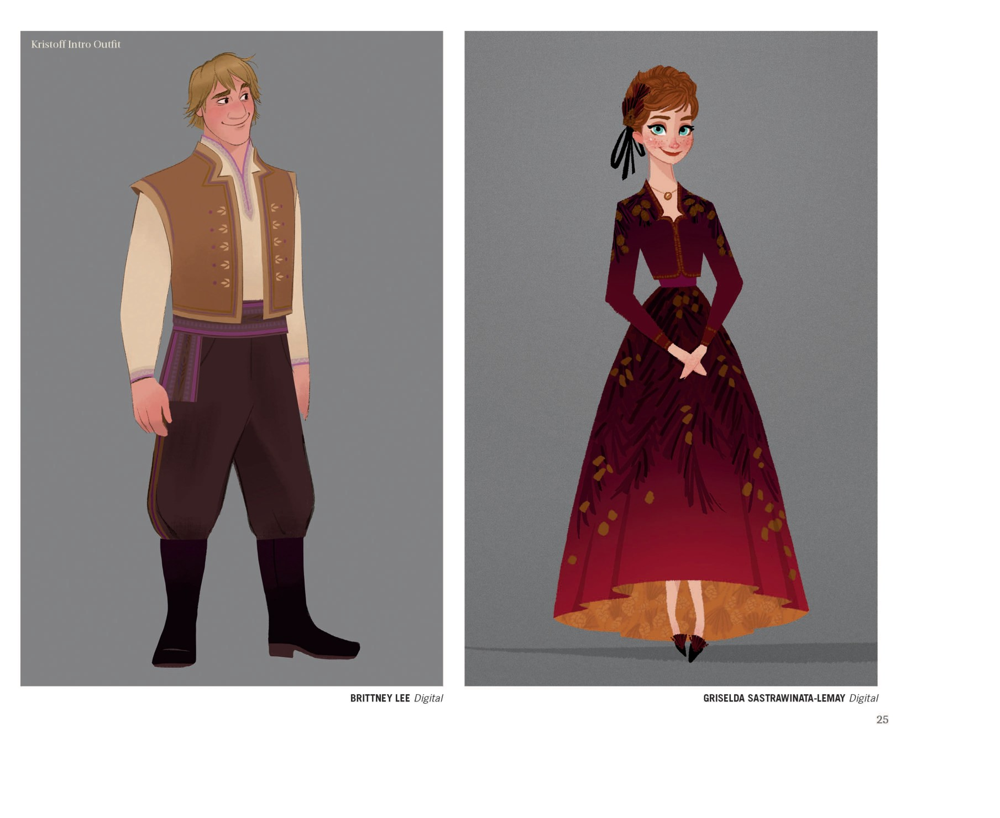
Kristoff 和 Anna 的 Final Intro Outfit 正式出场造型（p25）
Kristoff 的服装：奶油衬衫+棕色背心+紫色装饰腰带+深棕灯笼裤+黑靴；Anna 的服装：深酒红长袖礼服+黑金纹饰领口+金色叶状刺绣下裙+黑色发带+头饰。（F2设定集原页）
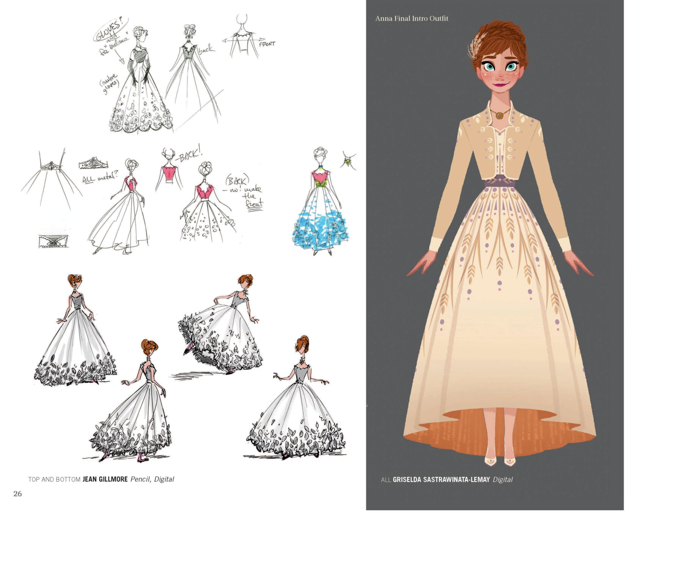
Anna Final Intro Outfit 设计过程（p26）
Anna 最终出场礼服（白色版）——长袖奶油色礼服+金色叶纹+紫色腰带+橙色内层裙摆。（F2设定集原页）
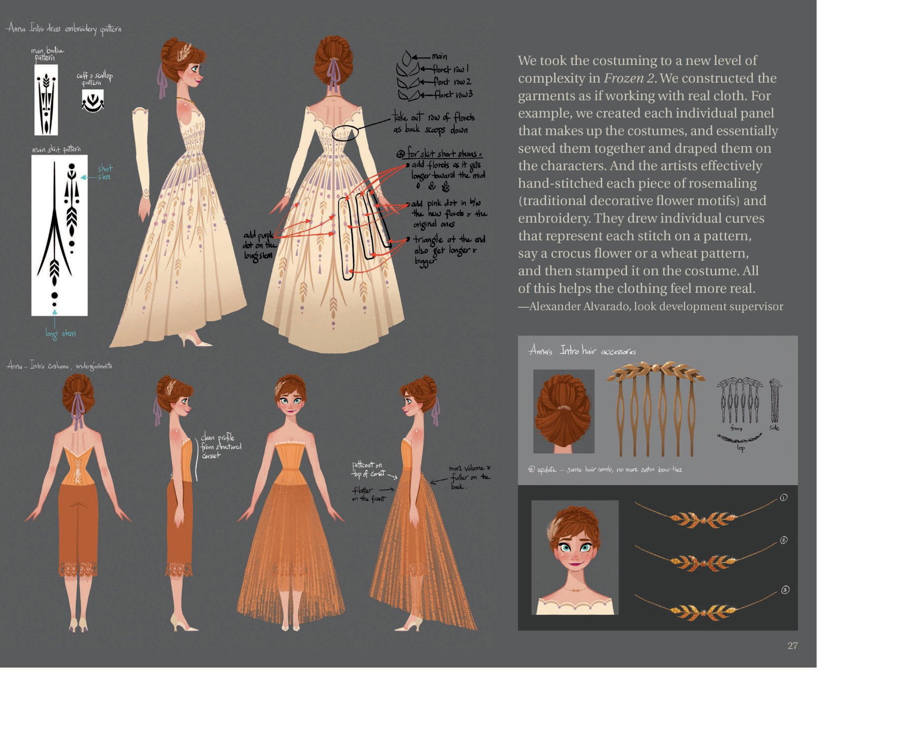
Anna 出场礼服装饰图案 + 内衣结构 + 发饰（p27）
Alexander Alvarado 谈服装技术：每件服装按真实布料制作（单独面板、缝合、披挂在角色上）；艺术家手工刺绣 rosemaling（北欧传统装饰花卉图案）和刺绣——逐针曲线绘制（藏红花、小麦图案）后印在服装上。（F2设定集原页）
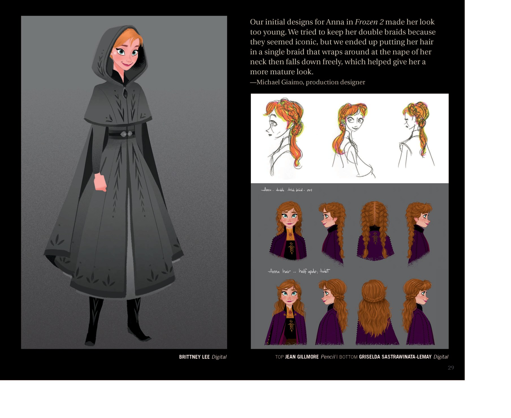
Anna 帽兜造型 + 发型设计过程（p29）
Michael Giaimo：Anna 最初设计太年轻；保留双辫很 iconic，但最终改成颈后缠绕单辫自然垂下，让她更成熟。（F2设定集原页）
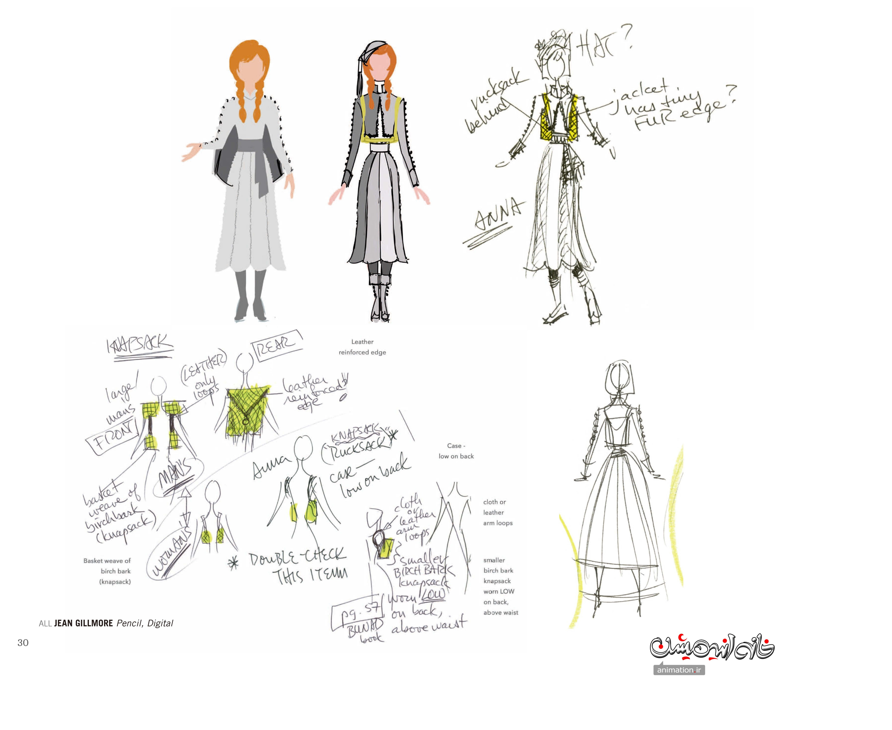
Anna 背包设计草图（p30）
Anna 背包设计——多种材质（皮革、白桦树皮、布），多种佩戴方式（胸前、背低、bolero 外套上等）。白桦树皮编织是关键材质。（F2设定集原页）
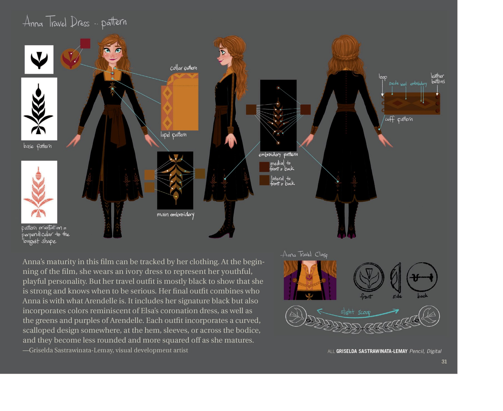
Anna Travel Dress 装饰图案 + 搭扣设计（p31）
Griselda Sastrawinata-Lemay：Anna 的成熟度可由服装追踪——开篇象牙色长裙（年轻 playful）→ 旅行装黑色（坚强）→ 最终套装融合 Anna 个人色彩 + Elsa 加冕服色调 + 阿伦黛尔绿/紫；每个服装都有弯曲扇贝边装饰，随成熟从圆润→方形。（F2设定集原页）

Elsa 配色方案 + Brittney Lee 访谈（p33）
Brittney Lee：Elsa 是艺术家，服装都用魔法创造，反映她的艺术感；Frozen II 色调改为与秋季协调（但不能太暗或暖，否则不像 Elsa）；最暖色调是开场穿的灰紫长裙（最现实布料，符合阿伦黛尔风格）；使用浅蓝→白色渐变让她轻盈空灵；Elsa 有比常人更多的 specularity（光泽），服装有冰晶亮（F2设定集原页）
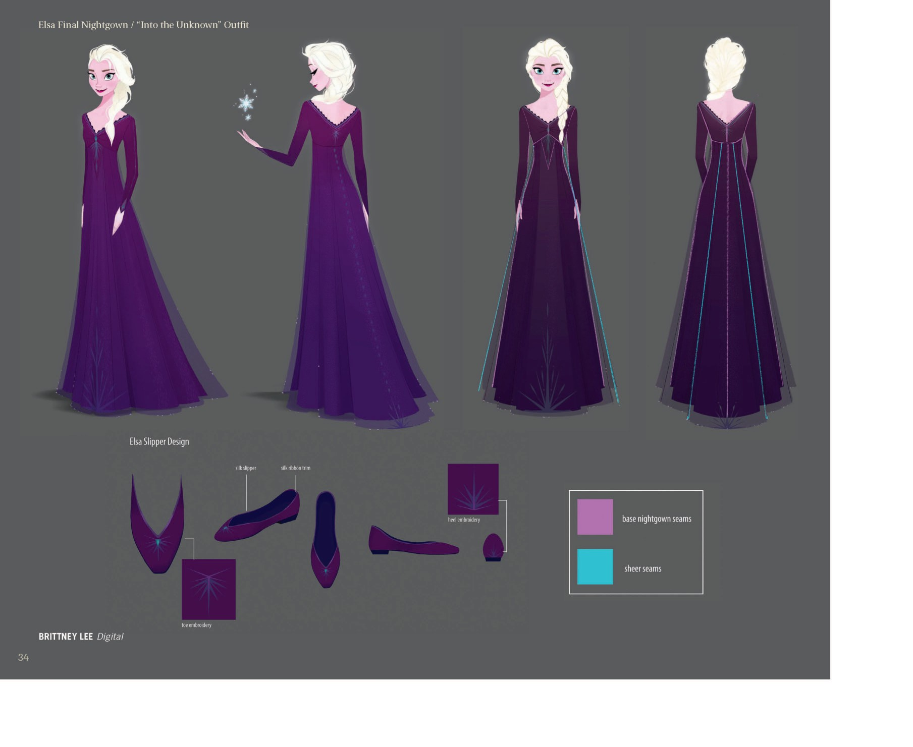
Elsa Final Nightgown
Elsa "Into the Unknown" 剧情场景中的深夜长裙——深紫罗兰色，配粉/蓝色缝线装饰；配套丝绸拖鞋有雪花刺绣。（F2设定集原页）
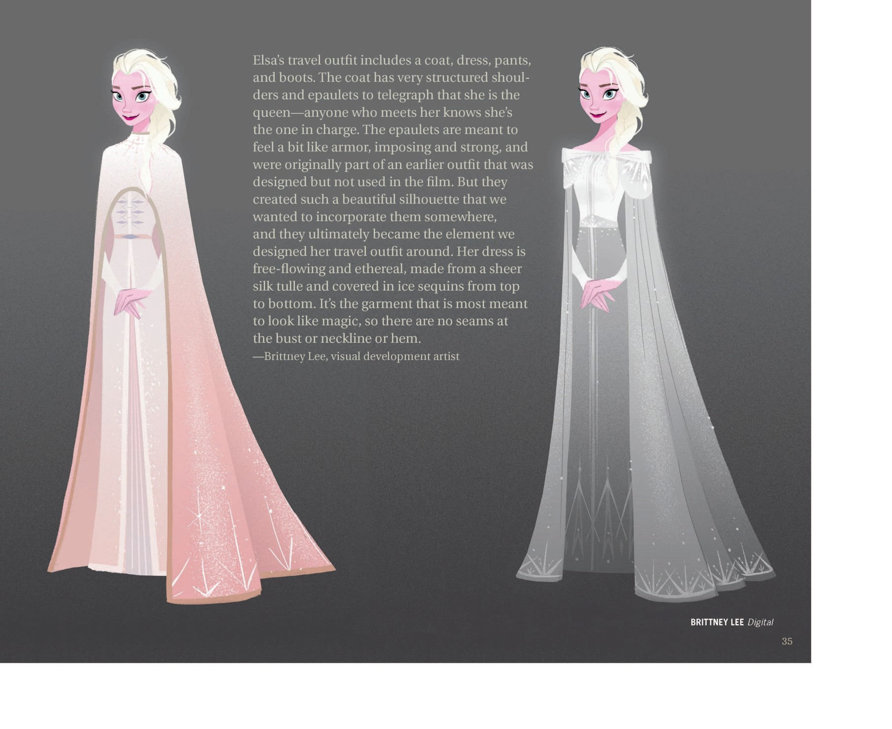
Elsa Travel Outfit（Elsa 旅行装设定）
Elsa 旅行装含外套、连衣裙、裤、靴；外套有结构化肩部与肩章，传递女王权威感；肩章形似盔甲，最初属于一个被弃用的早期造型，因轮廓优美被保留为旅行装的核心元素。裙装由薄纱欧根纱制成、自上而下覆满冰晶亮片，无胸/领/下摆接缝——最重"魔法感"。（F2设定集原页）
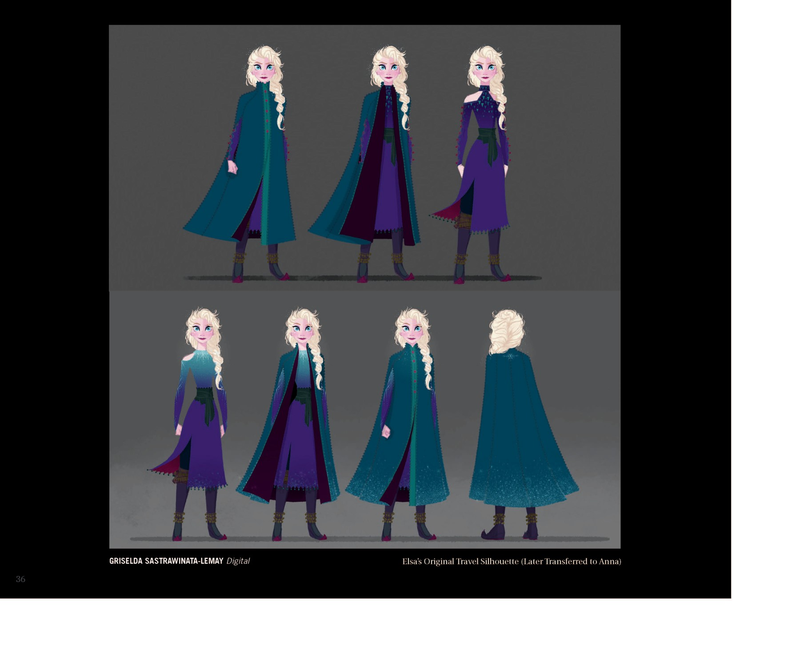
Elsa Travel Outfit（早期造型，后转移给 Anna）
此为 Elsa 原旅行装造型，最终转移给 Anna；可见深蓝绿斗篷+紫色长裙+棕色护腿靴的设计雏形。（F2设定集原页）
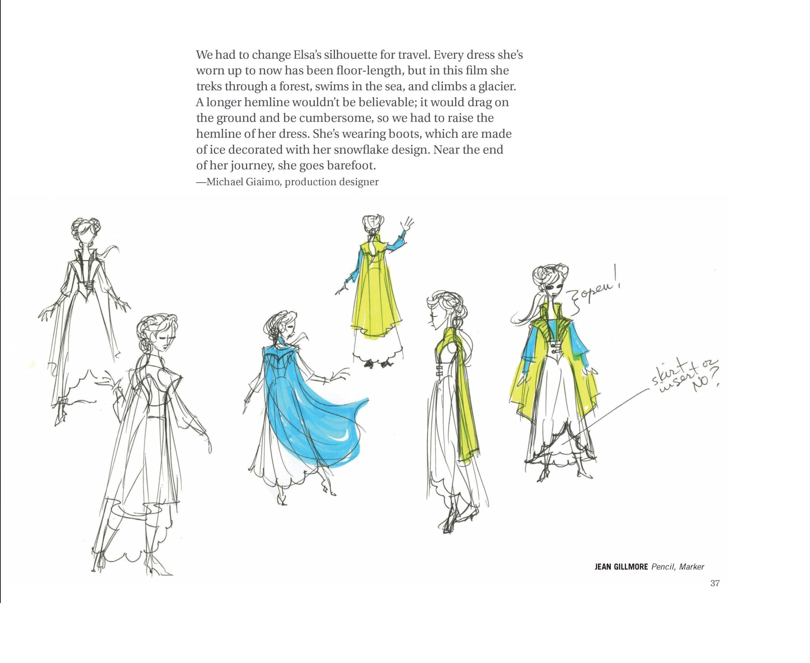
Elsa Travel Outfit（草图阶段）
Elsa 必须更换剪影——此前所有裙装都是拖地长裙，但本片要穿越森林、游泳、攀爬冰川，长裙摆会拖地且笨重，所以必须提高下摆；她穿冰制靴子并以雪花图案装饰；旅程接近尾声时她光脚。（F2设定集原页）
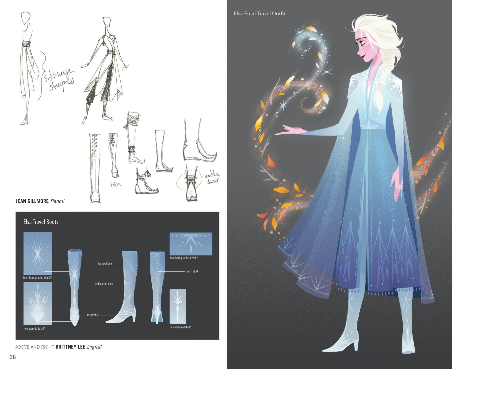
Elsa Travel Outfit（终版+靴子设定）
Elsa 旅行靴由冰制成，饰以雪花图形，靴面有冰贴饰、珍珠铆钉、皮革鞋跟；靴子前后均有不同图形细节；终版裙装为蓝紫白渐变。（F2设定集原页）
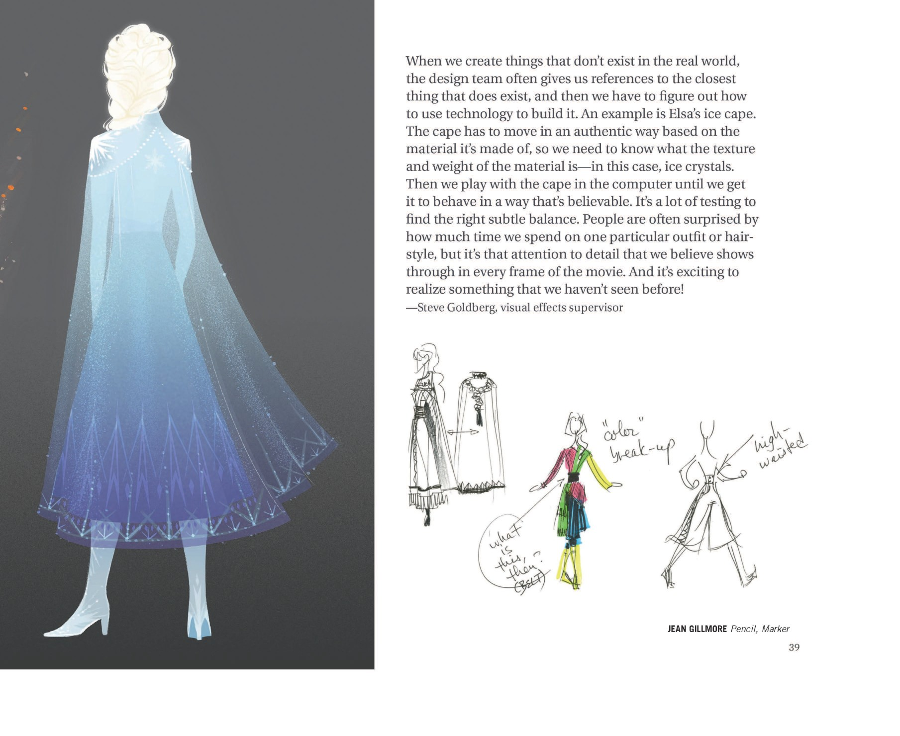
Elsa Travel Outfit（背面+视觉特效说明）
VFX 团队要为"世界上不存在的东西"（如 Elsa 冰披风）找到现实中最近的参考，再据此用技术构建；冰披风需按其材质（冰晶）运动，故必须弄清冰晶的纹理与重量；接着在电脑中反复测试直到披风表现可信——这种对单件造型/发型的细节打磨会体现在影片每一帧。（F2设定集原页）
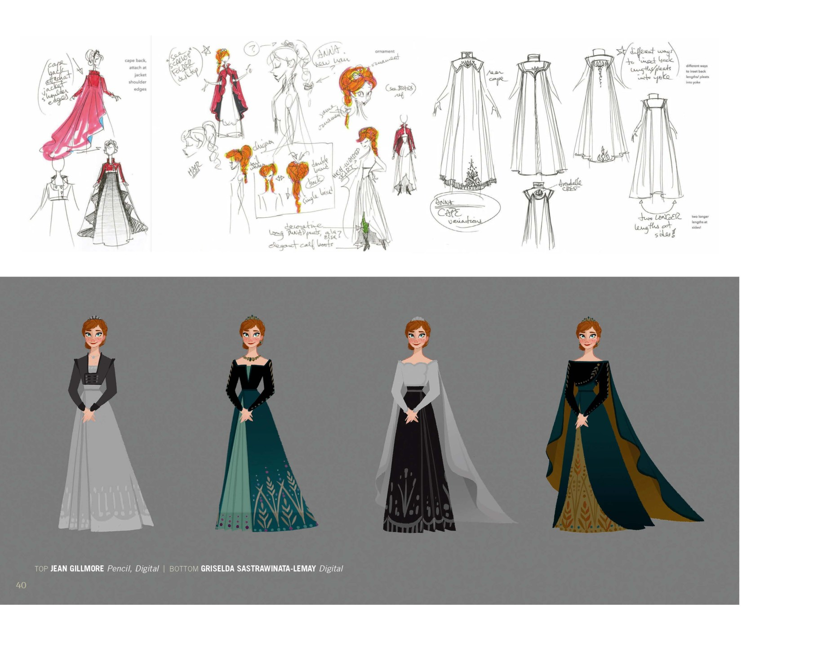
章节待考（Anna 造型设定页）
Anna 服装草图关键词：披风后部连接夹克肩部、加冕皇冠、辫刘海、辫尾简化、装饰性发髻、披风前部装饰、披风镶边等；最终选定四款 Anna 礼服造型并数字化。（F2设定集原页）
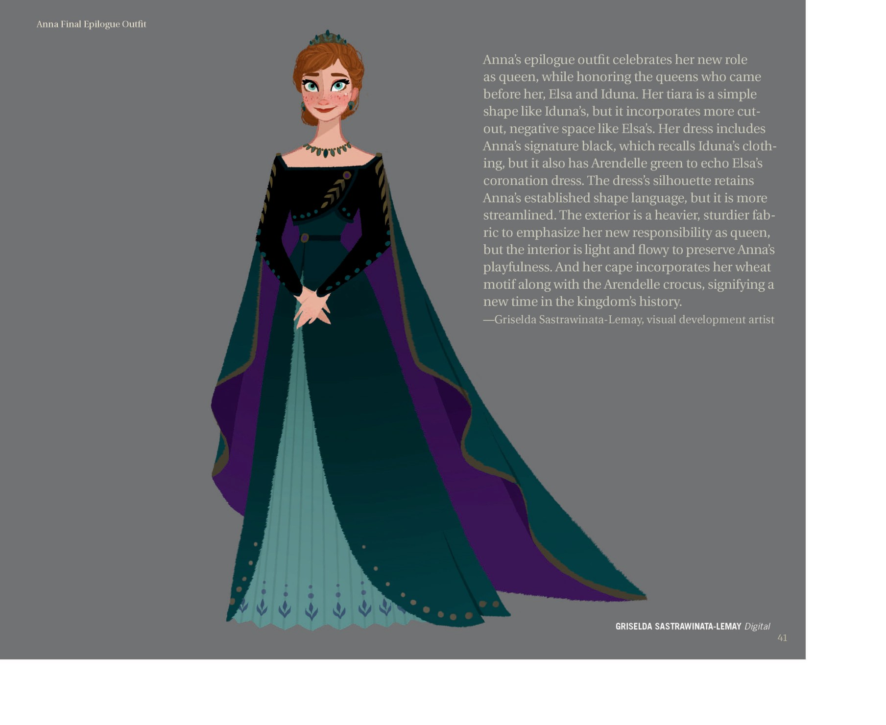
章节待考（Anna Final Epilogue Outfit）
Anna 终幕礼服的设计思路：庆祝她成为新女王，同时致敬前任 Elsa 与 Iduna；皇冠形似 Iduna 但加入 Elsa 的镂空设计；裙装保留 Anna 标志性的黑色（呼应 Iduna），又加入 Arendelle 绿（呼应 Elsa 的加冕裙）；剪影沿用 Anna 既有轮廓但更简洁；外层厚重象征新责任，内层轻盈（F2设定集原页）
💡 图注说明
本页全部图版为《The Art of Frozen II》（Jessica Julius, Chronicle Books 2019）原书扫描（原图复制，未压缩），图注（中文标题 + 要点首句）逐页取自官方设定集中文笔记，点击图片可查看原尺寸扫描。
📌 本页要点
你正在阅读《设定集》卷的「F2 图版 · 姐妹造型与服装（上）」。本页由电影正典、官方设定集与官方小说综合梳理，可作为该主题的速查入口；右侧目录可快速跳转到本页各小节。